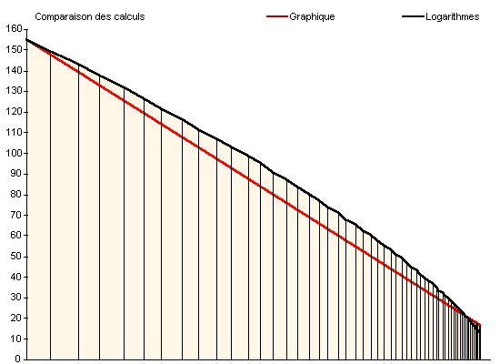
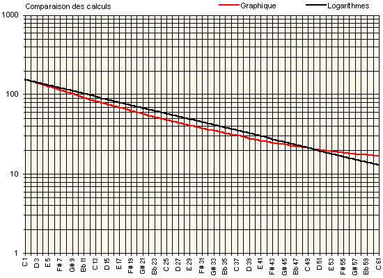

| |
Dom
Bedos
| Loga-
rithmes
| Diffé-
rence
|
| C |
1 |
155,7 |
155,7 |
0,0 |
| C♯ |
2 |
148,4 |
149,4 |
1,0 |
| D |
3 |
139,8 |
143,3 |
3,6 |
| E♭ |
4 |
133,3 |
137,5 |
4,2 |
| E |
5 |
125,6 |
132,0 |
6,3 |
| F |
6 |
119,9 |
126,6 |
6,7 |
| F♯ |
7 |
114,4 |
121,5 |
7,1 |
| G |
8 |
107,9 |
116,6 |
8,6 |
| G♯ |
9 |
103,1 |
111,9 |
8,8 |
| A |
10 |
97,3 |
107,3 |
10,0 |
| B♭ |
11 |
93,0 |
103,0 |
9,9 |
| B |
12 |
87,9 |
98,8 |
10,9 |
| C |
13 |
84,1 |
94,8 |
10,7 |
| C♯ |
14 |
80,4 |
91,0 |
10,5 |
| D |
15 |
76,1 |
87,3 |
11,2 |
| E♭ |
16 |
72,9 |
83,7 |
10,9 |
| E |
17 |
69,0 |
80,4 |
11,3 |
| F |
18 |
66,2 |
77,1 |
10,9 |
| F♯ |
19 |
63,4 |
74,0 |
10,5 |
| G |
20 |
60,2 |
71,0 |
10,8 |
| G♯ |
21 |
57,8 |
68,1 |
10,3 |
| A |
22 |
54,9 |
65,3 |
10,5 |
| B♭ |
23 |
52,7 |
62,7 |
10,0 |
| B |
24 |
50,2 |
60,2 |
10,0 |
| C |
25 |
48,3 |
57,7 |
9,5 |
| C♯ |
26 |
46,4 |
55,4 |
8,9 |
| D |
27 |
44,3 |
53,1 |
8,9 |
| E♭ |
28 |
42,7 |
51,0 |
8,3 |
| E |
29 |
40,7 |
48,9 |
8,2 |
| F |
30 |
39,3 |
46,9 |
7,6 |
| F♯ |
31 |
37,9 |
45,0 |
7,1 |
| G |
32 |
36,3 |
43,2 |
6,9 |
| G♯ |
33 |
35,1 |
41,5 |
6,4 |
| A |
34 |
33,7 |
39,8 |
6,1 |
| B♭ |
35 |
32,6 |
38,2 |
5,6 |
| B |
36 |
31,3 |
36,6 |
5,3 |
| C |
37 |
30,4 |
35,1 |
4,8 |
| C♯ |
38 |
29,4 |
33,7 |
4,3 |
| D |
39 |
28,4 |
32,4 |
4,0 |
| E♭ |
40 |
27,6 |
31,0 |
3,5 |
| E |
41 |
26,6 |
29,8 |
3,2 |
| F |
42 |
25,9 |
28,6 |
2,7 |
| F♯ |
43 |
25,2 |
27,4 |
2,2 |
| G |
44 |
24,4 |
26,3 |
1,9 |
| G♯ |
45 |
23,8 |
25,2 |
1,5 |
| A |
46 |
23,1 |
24,2 |
1,2 |
| B♭ |
47 |
22,5 |
23,2 |
0,7 |
| B |
48 |
21,9 |
22,3 |
0,4 |
| C |
49 |
21,4 |
21,4 |
0,0 |
| C♯ |
50 |
20,9 |
20,5 |
0,4 |
| D |
51 |
20,4 |
19,7 |
0,7 |
| E♭ |
52 |
20,0 |
18,9 |
1,1 |
| E |
53 |
19,5 |
18,1 |
1,4 |
| F |
54 |
19,2 |
17,4 |
1,8 |
| F♯ |
55 |
18,8 |
16,7 |
2,1 |
| G |
56 |
18,4 |
16,0 |
2,4 |
| G♯ |
57 |
18,1 |
15,4 |
2,7 |
| A |
58 |
17,8 |
14,8 |
3,0 |
| B♭ |
59 |
17,5 |
14,2 |
3,3 |
| B |
60 |
17,2 |
13,6 |
3,6 |
| C |
61 |
16,9 |
13,0 |
3,9 |
|
|
Il est facile de démontrer l'importance
du choix du calcul. Pour cela, on peut se baser sur les tailles du 8 pieds données
par Dom Bedos. Le premier do fait 5 pouces 9 lignes de diamètre, soit
155,7 mm. Le cinquième do est, quant à lui, donné comme mesurant
9 lignes et demi, soit 21,4 mm. Il est possible de calculer l'ensemble des diamètres
intermédiaires en suivant rigoureusement le procédé décrit
par Dom Bedos tout en traduisant celui-ci
par une fonction graphique afin d'obtenir des données numériques.
Parallèlement à cela, il n'est pas
inintéressant de calculer au moyen des logarithmes les intermédiaires de ce même
8 pieds et faire, pour chaque diamètre, la différence entre les deux
résultats afin d'en évaluer l'écart qui les sépare.
Apparaît alors une différence de
11,3 mm. sur le diamètre du mi de quatre pieds... Évidemment ce n'est pas
rien... C'est même beaucoup et les harmonistes décideurs des tailles des tuyaux devraient
peut être s'intéresser d'avantage au type de calcul qu'ils emploient en fonction de
l'époque qu'ils veulent recréer ou restaurer. S'il est entendu que les facteurs
d'orgues anciens, du xve au
xviiie siècle sont loin d'avoir
tous suivis le principe décrit par le moine bénédictin français, il n'en
reste pas moins que le procédé purement numérique basé sur les logarithmes
est une pratique qui ne fut courante qu'à partir du milieu du
xixe siècle. Aussi me semble-t-il
capital de ne pas choisir arbitrairement un système plutôt qu'un autre comme c'est encore
trop souvent le cas dans nos restaurations contemporaines.
On peut voir ci-dessous l'illustration graphique de
la table ci-contre : les valeurs sont rigoureusement identiques d'un graphique à
l'autre ; seul le procédé de traçage graphique est modifié. Les
valeurs calculées suivant le procédé de Dom Bedos sont figurées
sur la ligne rouge, celles calculées suivant le procédé logarithmique sont
quant à elles placées sur la ligne noire. On peut apprécier sans difficulté
la rectitude des droites selon le type de représentation.


|

.")